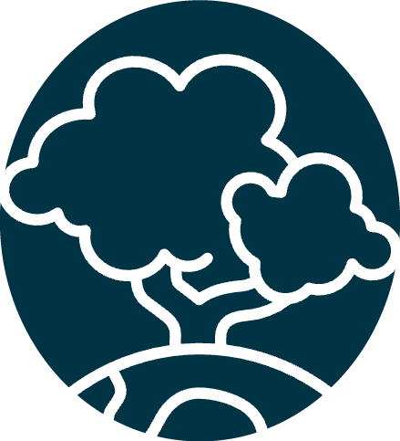
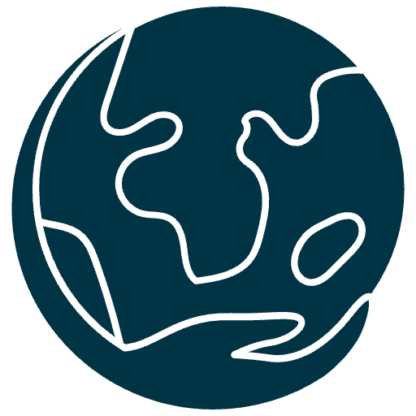

DIN ANVÄNDNING AV VATTEN PÅVERKAR MILJÖN
I Norden har vi gott om färskvatten, men utmaningen ligger i att små vattenförsörjningssystem ofta saknar resurser och kunskap för att säkerställa rent vatten för alla.
Läs merSPARA
vatten

SKYDDA
naturen

HÅLLBAR
framtid